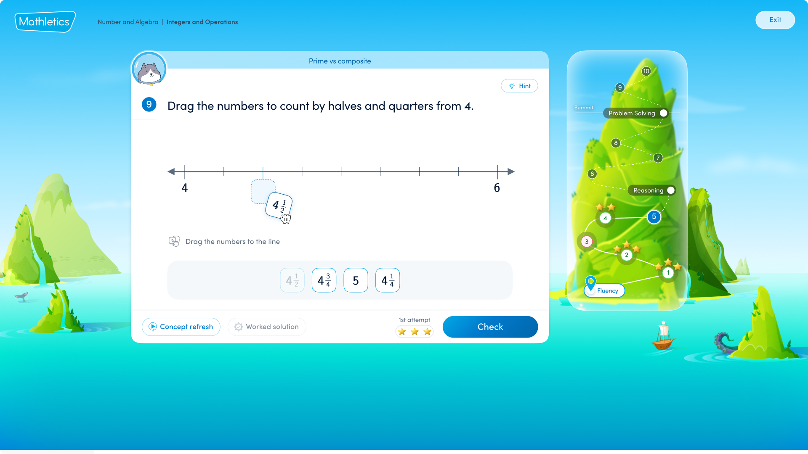

Platform login: UN: MAS48784 / PW: bird43

Mathletics is used by over 3.5 million students globally. This was the project to rebuild what those students actually experience every time they log in.
The problem
Student retention was falling. The platform was visually dated, the course structure wasn't grounded in a coherent learning science framework, and the engagement model wasn't designed to keep students coming back consistently. For a platform competing on outcomes, the student-facing experience was the weakest link.
The work
A two-year project delivered as part of a team of three, covering the full student-facing platform.
New Courses. Designed a science-backed explicit teaching framework structured around four progressive steps: understanding, problems, reasoning, and problem solving. Each concept follows the same progression, building toward mastery rather than exposure.
Built to run through a new internal authoring tool, which gave the team full control over content creation and removed dependency on third-party vendors entirely. This was as much an infrastructure decision as a design one — it gave the business the flexibility to move fast on content without external bottlenecks.
Student Centre UI. Led a complete redesign of the student experience. Every screen reconsidered: visual identity, interaction patterns, information hierarchy. The goal was to modernise the platform and give students an experience that genuinely matches the quality of the learning behind it.
Certificate System. Rebuilt the achievement model from 3 certificates to 40, each mapped to the school year and calibrated to roughly 30 minutes of learning per week. Grounded in behavioural science: consistent, achievable milestones that reward regular engagement rather than one-off peaks.
Extended offline with a physical certificate program delivered into schools, giving students something tangible to mark their progress and bringing the digital achievement into the classroom in a way that teachers and parents could see.
The impact
Most certificates ordered in a single week ever recorded on the platform, at launch. Highest sustained certificate engagement in platform history. Active time online increased measurably post-launch. Strong positive feedback from schools across the board, with the certificate program in particular resonating as something that connected the digital experience back to real classroom life.